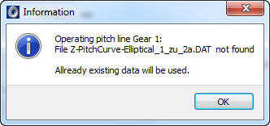

|
|
|


展成
起始角 φa 和终止角 φe是重要的数值，因为它们决定了齿轮1的工作节线，即将被展成的区域。在闭合曲线中，角度 φa 为 0°，φe 为 360°。
工作节线或传动比递进则在文件中定义。文件必须为"dat"或"dxf"格式。这些文件可以存储在任意目录中。重要的是正确注册这些文件，使用 按钮。
工作节线也存储在 .Z40 文件中。因此，当您加载一个新的计算时，不需要访问 .dat 文件。在这种情况下，您会看到一条消息，告知您文件未找到，并使用现有数据代替。

图21.3：消息
注意
递进曲线（传动比或工作节线）必须至少从起始角定义到终止角。为了实现均匀啮合，曲线必须具有大约 30° 的前进运动和跟随运动。如果曲线没有前进运动和/或跟随运动，软件会自动将其延长。
Generation
The start and end angles φa and φeare important values because they determine the operating pitch line of gear 1, i.e. the area that will be generated In closed curves the angle φa is 0° and φe is 360°.
The operating pitch lines or the ratio progression are then defined in files. The files must be in either "dat" or "dxf" format. These files can be stored in any directory. It is important to register these files correctly, using the button.
Operating pitch lines are also stored in the .Z40 file. As a consequence, when you load a new calculation, you do not need to access the .dat file. In this case you see a message to tell you the file cannot be found, and existing data will be used instead.
Figure 21.3: Message
Note
The progression (ratio or operating pitch line) must be defined from at least the starting angle to the end angle. To achieve uniform meshing, the curve must have approximately 30° forward motion and follow-up movement. If the curve has no forward motion and/or follow-up movement, the software extends it automatically.